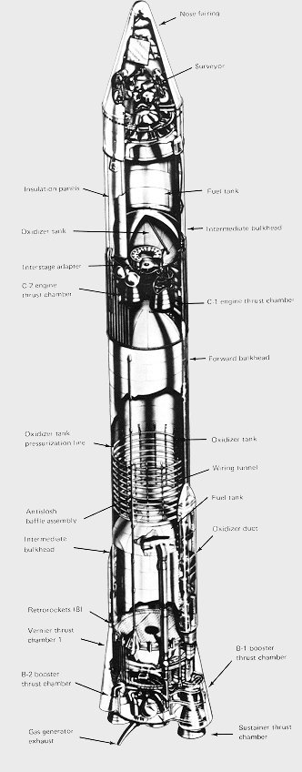

| 
|
The Surveyor mission had been conceived in 1959 as
a scheme to soft-land scientific instruments an the
Moon's surface. It was a highly ambitious plan that
required both development of a radical new launch
vehicle and the new technology of a closed-loop,
radar-controlled automated landing. The cutaway
drawing shows the Atlas-Centaur launch vehicle.
The Atlas-Centaur, a major step forward in rocket propulsion,
was the first launch vehicle to use the high-energy
propellant combination of hydrogen and oxygen. Its
new Centaur upper stage, built by General Dynamics,
had two Pratt & Whitney RL-10 engines of 15,000-lb thrust each.
The first stage was a modified Atlas D
having enlarged tanks and increased thrust.
|